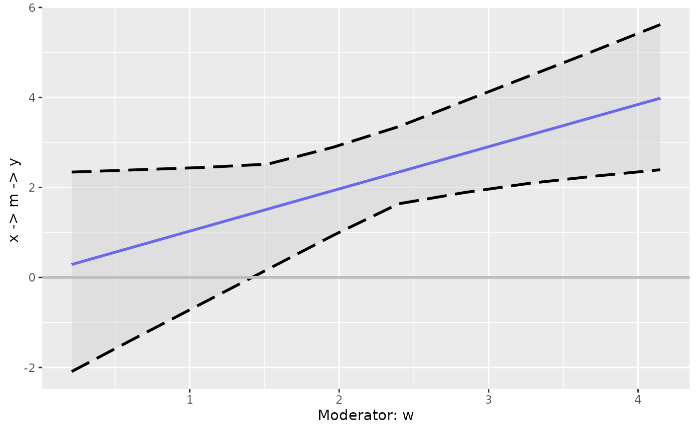
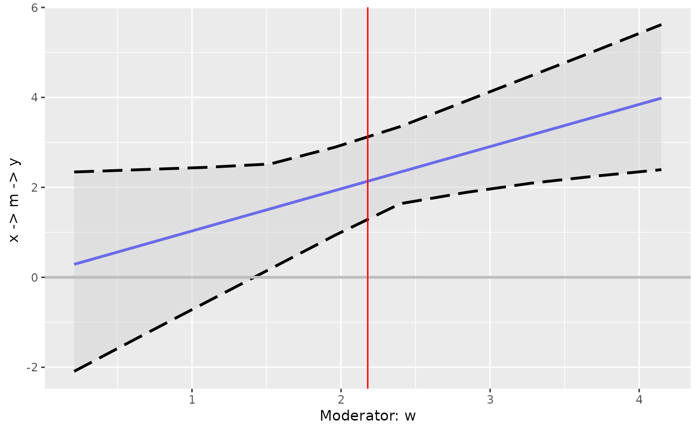

It plots an effect, direct or indirect, against a moderator, with confidence band if available.
Usage
plot_effect_vs_w(
object,
w = NULL,
w_label = NULL,
effect_label = NULL,
add_zero_line = TRUE,
always_draw_zero_line = FALSE,
line_linewidth = 1,
line_color = "blue",
shade_the_band = TRUE,
draw_the_intervals = TRUE,
band_fill_color = "lightgrey",
band_alpha = 0.5,
intervals_color = "black",
intervals_linetype = "longdash",
intervals_linewidth = 1,
zero_line_color = "grey",
zero_line_linewidth = 1,
zero_line_linetype = "solid",
line_args = list(),
band_args = list(),
intervals_args = list(),
zero_line_args = list()
)Arguments
- object
The output of
cond_indirect_effects().- w
The name of the moderator. Must be present in
object. IfNULL, the default, andobjecthas only one moderator, then it will be set to that moderator. Because this function currently only supports a path with only one moderator, this argument can be left asNULLfor now.- w_label
The label of the horizontal axis. If
NULL, the default, it will bepaste0("Moderator: ", w).- effect_label
The label of the vertical axis. If
NULL, the default, it will be generated from the path.- add_zero_line
Whether a horizontal line at zero will be drawn. Default is
TRUE.- always_draw_zero_line
If
FALSE, the default, then the line at zero, if requested will be drawn only if zero is within the range of the plot. IfTRUE, then the line at zero will always be drawn.- line_linewidth
The width of the line of the effect for each level of the moderator, to be used by
ggplot2::geom_line(). Default is 1. Always overrides the value ofline_args.- line_color
The color of the line of the effect for each level of the moderator, to be used by
ggplot2::geom_line(). Default is "blue". Always overrides the value ofline_args.- shade_the_band
If
TRUE, the default, a confidence band will be drawn as a region along the line if confidence intervals can be retrieved fromobject.- draw_the_intervals
If
TRUE, the default, two lines will be drawn for the confidence intervals along the line if they can be retrieved fromobject.- band_fill_color
The color of of the confidence band, to be used by
ggplot2::geom_ribbon(). Default is "lightgrey". Always overrides the value ofband_args.- band_alpha
A number from 0 to 1 for the level of transparency of the confidence band, to be used by
ggplot2::geom_ribbon(). Default is.50. Always overrides the value ofband_args.- intervals_color
The color of the lines of the confidence intervals, to be used by
ggplot2::geom_line(). Default is"black". Always overrides the value ofintervals_args.- intervals_linetype
The line type of the lines of the confidence intervals, to be used by
ggplot2::geom_line(). Default is"longdash". Always overrides the value ofintervals_args.- intervals_linewidth
The line width of the lines of the confidence intervals, to be used by
ggplot2::geom_line(). Default is 1. Always overrides the value ofintervals_args.- zero_line_color
The color of the line at zero, to be used by
ggplot2::geom_line(). Default is"grey". Always overrides the value ofzero_line_args.- zero_line_linewidth
The line width of the line at zero, to be used by
ggplot2::geom_line(). Default is 1. Always overrides the value ofzero_line_args.- zero_line_linetype
The line type of the line at zero, to be used by
ggplot2::geom_line(). Default is"solid". Always overrides the value ofzero_line_args.- line_args
A named list of additional arguments to be passed to
ggplot2::geom_line()for the line of the effect against moderator. Default islist().- band_args
A named list of additional arguments to be passed to
ggplot2::geom_ribbon()for the confidence band. Default islist().- intervals_args
A named list of additional arguments to be passed to
ggplot2::geom_line()for the lines of confidence intervals. Default islist().- zero_line_args
A named list of additional arguments to be passed to
ggplot2::geom_line()for the line at zero. Default islist().
Value
A ggplot2 graph. Plotted if not assigned to a name. It can be further modified like a usual ggplot2 graph.
Details
It receives an output
of cond_indirect_effects() and
plot the effect against the
moderator. The effect can be an
indirect effect or a direct effect.
It uses the levels of the moderator
stored in the output of
cond_indirect_effects(). Therefore,
the desired levels of the moderator
to be plotted needs to be specified
when calling cond_indirect_effects(),
as illustrated in the example.
Currently, this function only supports a path with exactly one moderator, and the moderator is a numeric variable.
Examples
dat <- data_med_mod_a
lm_m <- lm(m ~ x*w + c1 + c2, dat)
lm_y <- lm(y ~ m + x + c1 + c2, dat)
fit_lm <- lm2list(lm_m, lm_y)
# Set R to a large value in real research.
boot_out_lm <- do_boot(fit_lm,
R = 50,
seed = 54532,
parallel = FALSE,
progress = FALSE)
# Compute the conditional indirect effects
# from 2 SD below mean to 2 SD above mean of the moderator,
# by setting sd_from_mean of cond_indirect_effects().
# Set length.out to a larger number for a smooth graph.
out_lm <- cond_indirect_effects(wlevels = "w",
x = "x",
y = "y",
m = "m",
fit = fit_lm,
sd_from_mean = seq(-2, 2, length.out = 10),
boot_ci = TRUE,
boot_out = boot_out_lm)
p <- plot_effect_vs_w(out_lm)
p

# The output is a ggplot2 graph and so can be further customized
library(ggplot2)
# Add the line for the mean of w, the moderator
p2 <- p + geom_vline(xintercept = mean(dat$w),
color = "red")
p2
